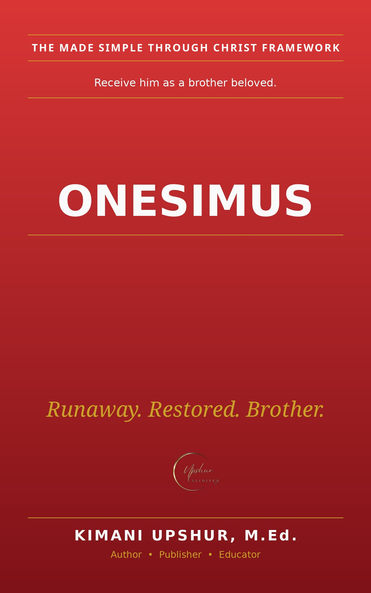

Home / Books / Bible People & Stories

Readers Also Browse
More Bible People & Stories titles.
Home / Books / Bible People & Stories

More Bible People & Stories titles.
A fresh Bible verse, reflection, and prayer in your inbox every morning.